- Depuis 1995Le travail du cuir, en maroquinerie
- École nationaleDe sellerie-harnachement, chez le sellier Sarras-Bournet
- Sellier garnisseurFormée à l'AFPA de Rodez en 2024
- Made in FranceUn travail entièrement artisanal
Les Trois Alènes vous propose
Pour toute commande, une création particulière ou un devis de réparation, je suis à votre écoute par téléphone ou par mail.
Sellerie garnissage
Sièges auto et moto, banquettes, coussins et assises, tables de massage et fauteuils médicaux, accessoires de salle de sport, bâches de protection en PVC. En simili cuir, tissu ou cuir.
La sellerieHarnachement
Sur mesure : enrênements en cuir, licols, bridons, side pull, hackamores, guêtres, fontes. Réparations de vos selles et harnachements.
Le harnachementMaroquinerie
Sacs, sacoches ceintures, porte-monnaie, étuis à lunettes en cuir de vachette pleine fleur tannage végétal. Sur mesure : cartables, étuis à couteaux, sacoches à outils.
La maroquinerie
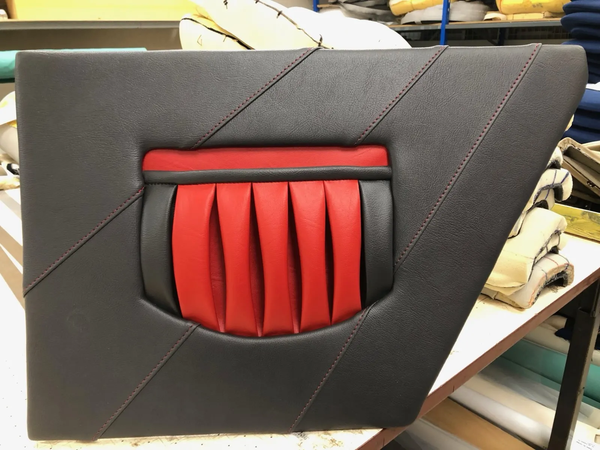
Médaillon de porte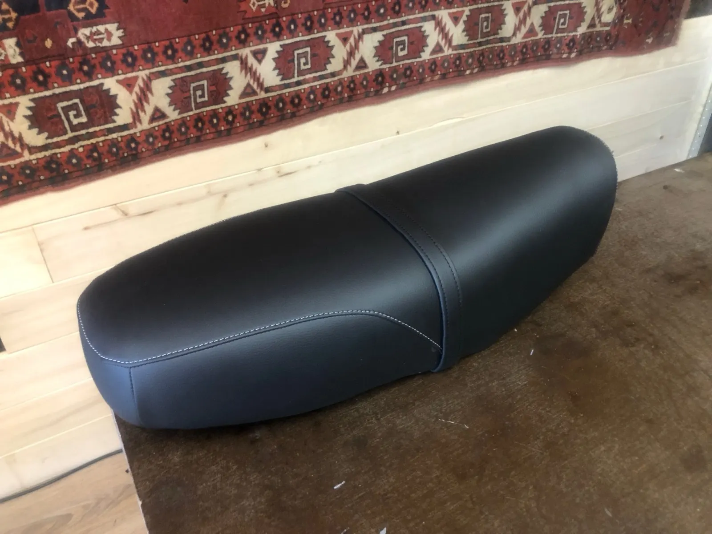
Selle de moto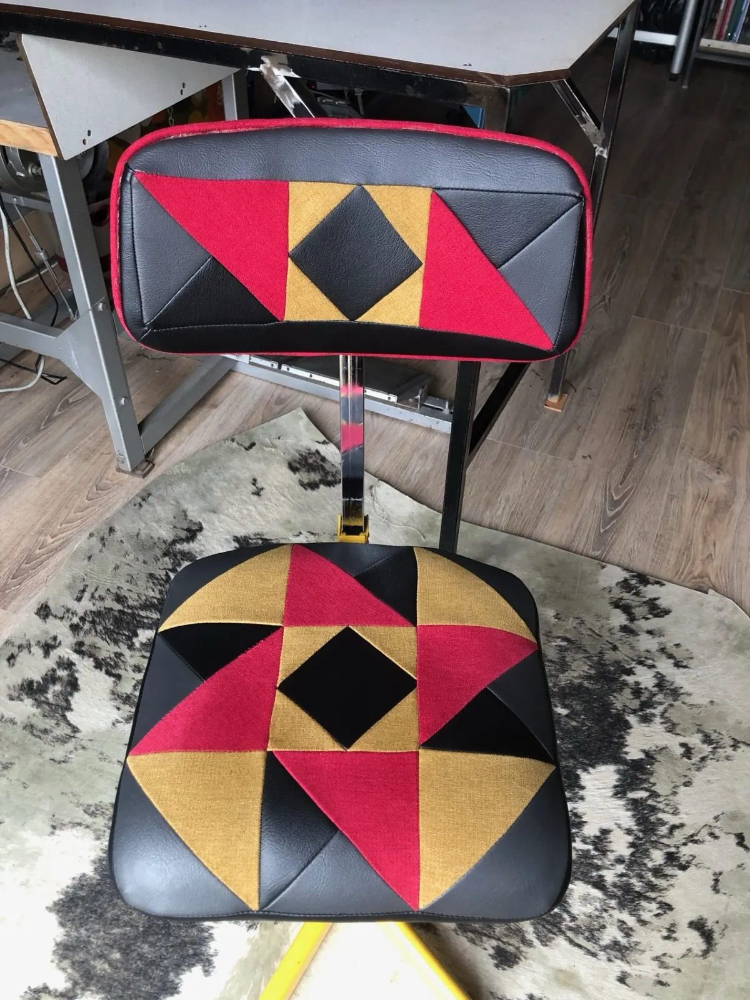
Siège de coutureRénovation des intérieurs de voiture et des selles de moto
À l'identique ou selon vos envies : côtes sellières, côtes plates ou coutures de décoration. Il est possible de ne remplacer que la partie abîmée de la coiffe, et il est préférable de réparer dès l'apparition d'une déchirure.
- Réparation des mousses et garnitures des sièges
- Modification du confort des selles de moto
- Gainage des éléments de portières
- Rénovation des moquettes et des ciels de toit
Sellerie générale
- Bars et restaurants : assises, banquettes, tabourets
- Milieu médical : tables de massage, fauteuils de dentiste
- Espaces extérieurs : transats, bâche PVC, toile anti pluie ou anti UV
Le harnachement du cheval, sur mesure
Licols, bridons, hackamores, brides de dressage, enrênements type collier de chasse ou martingale, étrivières ou fontes de randonnée. Le cuir de tannage végétal est coupé dans le dosset, dense, et teinté dans la masse pour éviter toute décoloration avec la transpiration du cheval.
Les coutures sont entièrement faites à la main, au point sellier. La bouclerie est en laiton ou en inox, selon la couleur désirée. Je répare aussi vos selles : quartiers, panneaux, porte-étrivières, contre-sanglons.
- Licol, vachette naturelle, tannage végétal150 €
- Sidepull et licol, vachette tannage végétal200 €
- Guêtres de saut d'obstacle, la paire130 €
- Fontes de randonnée, la paire270 €
Produits uniquement sur mesure : le devis est établi après accord sur la couleur, la taille et les détails de décoration.
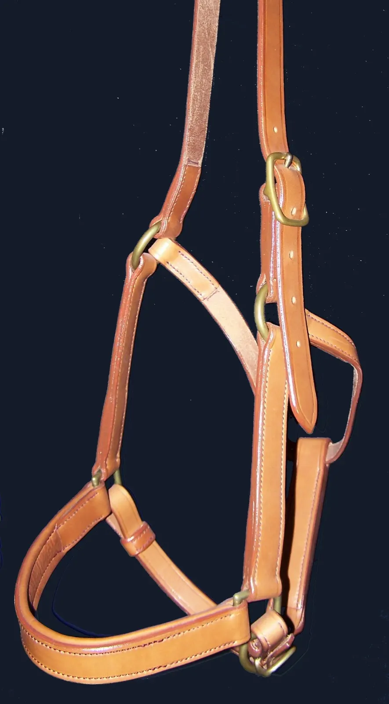
Licol en vachette naturelle, 150 €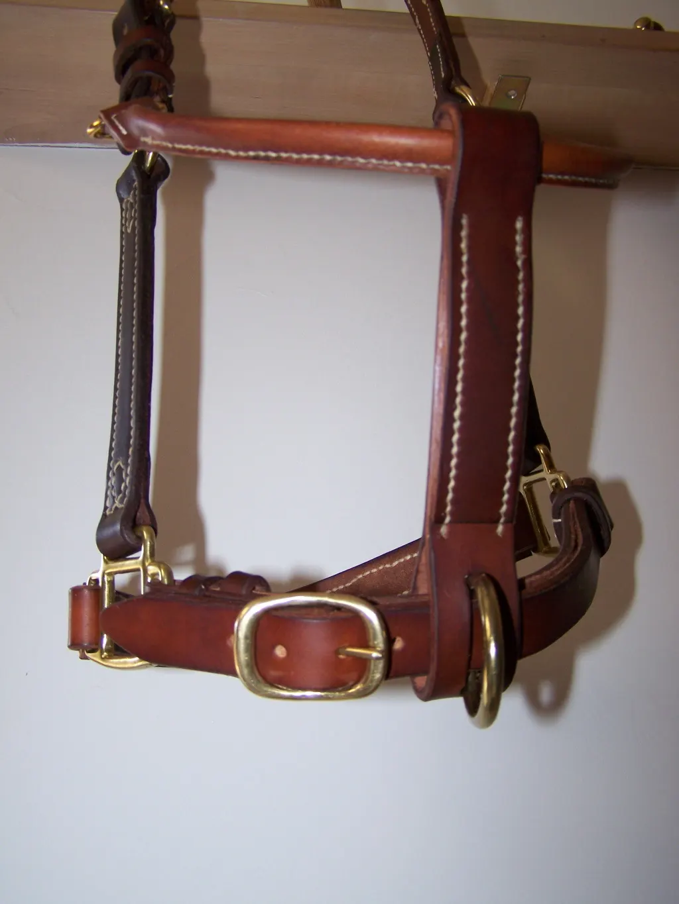
Licol, détail alliance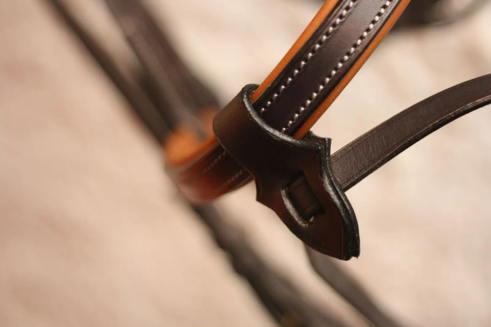
Des objets qui confondent beauté et solidité
Un cuir de qualité correctement tanné, une coupe nette et une belle couture rendront tout objet naturellement beau et élégant. Je dessine toutes mes formes : taille, couleur et fermoir se choisissent sur mesure.
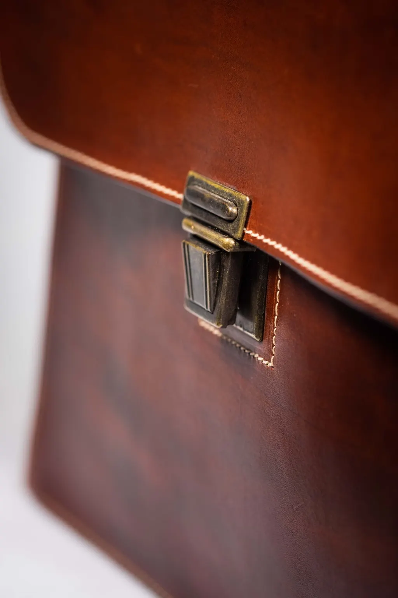
Serviette, cuir pleine fleurÀ commander par mail
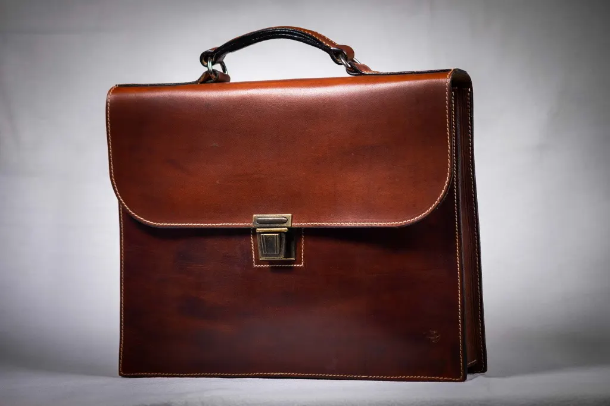
Serviette, 200 €Cuir végétal pleine fleur, poche zippée à l'arrière, 35 x 27 x 5 cm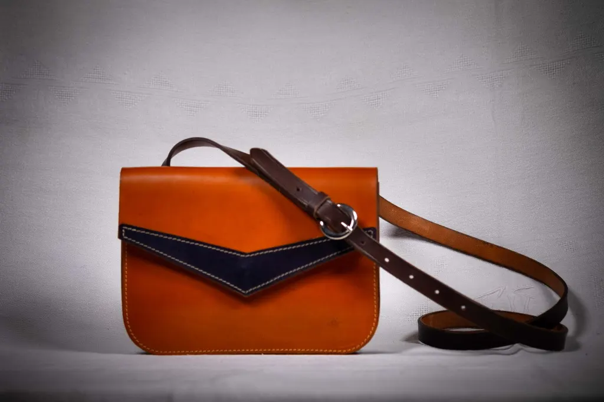
Sac Brigitte, 100 €Cuir végétal, simple poche, fermeture bouton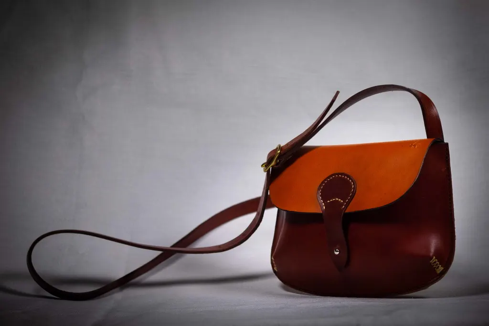
Sac perle bicouleur, 100 €Cuir pleine fleur tannage végétal, 22 x 15 x 3 cm
Sacs livrés en 10 à 15 jours. Les frais de port sont en sus.
Deux aiguilles sont nécessaires : c'est le croisement des 2 fils dans le trou de l'alêne qui assure la solidité de l'assemblage.
La couture sellier est utilisée depuis très longtemps pour les coutures soumises à fortes tractions. Je dessine mes gabarits sur du papier cartonné avant de les reporter sur le cuir.
- Le couteau demi-lunepour couper le cuir
- La roulette à griffepour marquer les points de couture
- L'alênepour percer les trous avant couture
- La pince à sellierpour tenir le cuir à assembler
- L'abat carrepour chanfreiner les bords
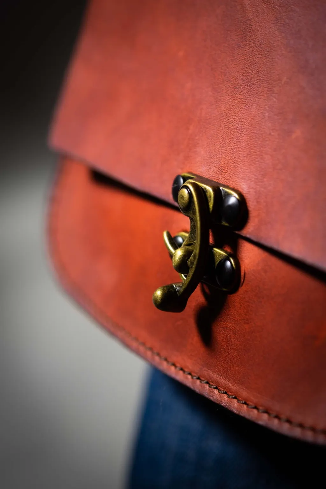
Le cuir se patinera avec le tempsSéverine Combes, sellière
J'ai travaillé 30 ans dans le spectacle vivant, comme régisseuse plateau et régisseuse générale. Je me concentre aujourd'hui uniquement sur la sellerie garnissage, le harnachement et la maroquinerie.
- 1995Je commence la maroquinerie, par plaisir du travail du cuir.
- 2011Cavalière de randonnée, je me perfectionne à l'École Nationale de Sellerie-Harnachement, à Vinzier.
- 2011Atelier-boutique à Sète, en coopérative d'emploi.
- 2015Je déménage en Lozère et crée mon atelier.
- 2019Je prends le statut d'auto-entrepreneur en sellerie, maroquinerie et harnachement d'équitation.
- 2024J'apprends le métier de sellier garnisseur à l'AFPA de Rodez.
Venir à l'atelier, sur rendez-vous
L'atelier est situé dans un village des hautes Cévennes : il est préférable de me prévenir de votre venue, pour éviter de trouver porte close en cas de déplacement.
- Téléphone
- 06 65 02 37 11
- severine@lestroisalenes.fr
- Atelier
- Fraissinet-de-Lozère
48220 Pont-de-Montvert - Commandes
- Par mail, frais de port en sus